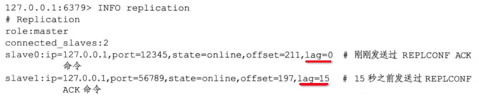

复制（多机数据库的实现）
127.0.0.1:6380> SLAVEOF 127.0.0.1 6379
OK
服务器127.0.0.1：6380 成为 6379的从服务器
1 旧版复制功能实现
复制分为两个操作：
- 同步：用户将从服务器的数据库状态更新至主服务器当前的状态
- 命令传播：在主服务器的数据库状态被修改，让主从服务器重新回到一致状态
1.1 同步（sync）
从服务器向主服务器发送sync命令
说明
sync是非常好资源
- 主服务器需要执行BGSAVE命令，生成RDB，这个会耗费主服务器大量的CPU、内存和磁盘IO资源
- 主服务器需要将RDB文件发送给从服务器，耗费大量的网络资源（带宽、流量）
- 从服务器接收到RDB文件后，载入RDB文件，载入期间属于阻塞操作。
1.2 命令传播（command propagate）
执行完同步命令后，主从服务器状态达成一致。当主服务器执行了写命令之后，需要由主服务器将写命令发送给从服务器，由从服务器执行一次而再次达成一致。
1.3 新版复制功能的实现
旧版断线重连复制，断线后，用sync来重新同步
新版断线重连复制，断线后，用psync将断线后的数据发送给从服务器
2 部分重同步的实现
2.1 复制偏移量
主从服务器分别维护各自复制偏移量，主服务器每次向从服务器传播N个字节，偏移量便会加上N
2.2 复制积压缓冲区
假设出现了断线的情况
主服务器维护了一个固定长度先进先出队列（复制积压缓冲区），默认为1MB
当进行命令传播的时候，会将写命令发送给所有从服务器，并写入复制积压缓冲区
当从服务器重连后，会通过PSYNC将自己的复制偏移量offset发送给主服务器
- 如果offset偏移量之后的数据仍然存在与复制积压缓冲区，将执行部分重同步
- 相反，如果不在复制积压缓冲区，主服务器将对从服务器执行完整重同步
2.3 服务器运行ID（run ID）
- 每个REDIS服务器，都有自己的运行ID
- 当从服务器向主服务器进行初次复制时，主服务器会将自己的运行ID传送给从服务器，从服务器保存
- 当断线重连后，从服务器会将运行ID发送给主服务器，主服务器检查如果是同一个run id，将执行部分重同步，否则执行完整同步
3 PSYNC 命令的实现
4 复制的实现
4.1 设置主服务器的地址和端口
从服务器将客户端给定的主服务器IP地址及端口保存在服务器状态里
struct redisServer {
// ...
// 主服务器地址、端口
char *masterhost;
char * masterport;
}
4.2 建立套接字链接
执行完slaveof之后，从服务器创建连向主服务器的套接字链接。
- 从服务器将为套接字管理一个文件事件处理器，用于接收RDB文件，写命令等
- 主服务器将为套接字创建对应的客户端状态，将从服务器当成一个客户端来看待
4.3 发送PING命令
检查套接字的读写状态是否正常
4.4 身份验证
4.5 发送端口信息
主服务器会将端口号记录在对应的客户端状态的slave_listening_port属性中
4.6 同步
4.7 命令传播
完成同步后，主从服务器将会进入命令传播状态
5 心跳检测
在命令传播阶段，从服务器默认会以每秒一次的频率，向主服务器发送命令
REPLCONF ACK <replication_offset>
offset为从服务器当前的复制偏移量
5.1 检测主从服务器的网络连接状态
lag应该在0~1秒间跳动，超过1秒怎说明出现了故障

5.2 辅助实现min-slaves配置选项
5.3 检测命令丢失
因网络问题，丢失了传播的命令。
当从服务器向主服务器发送REPLCONF ACK命令时，主服务器会检查到从服务器丢失了33个字节，会从缓冲区再次向从服务器传播